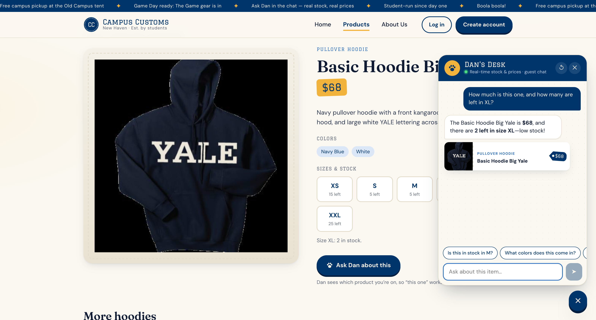
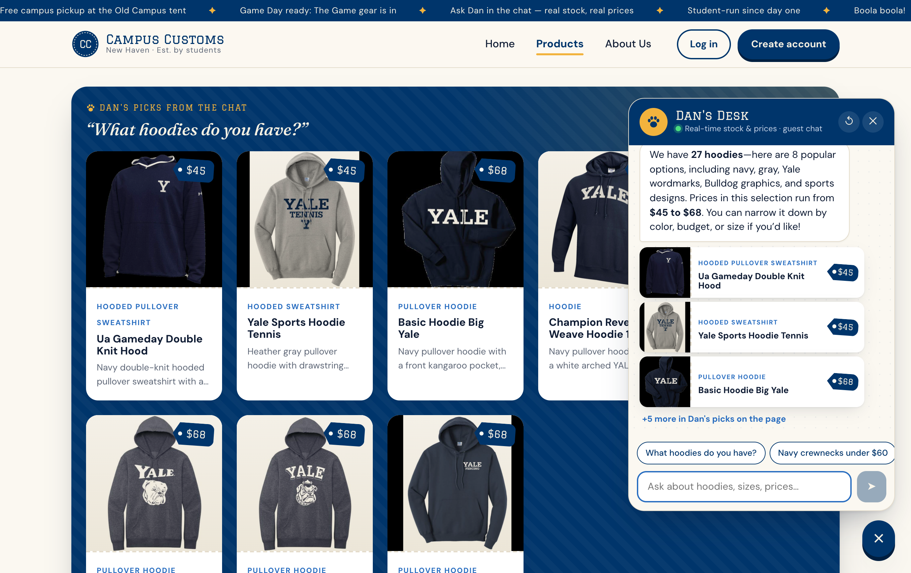
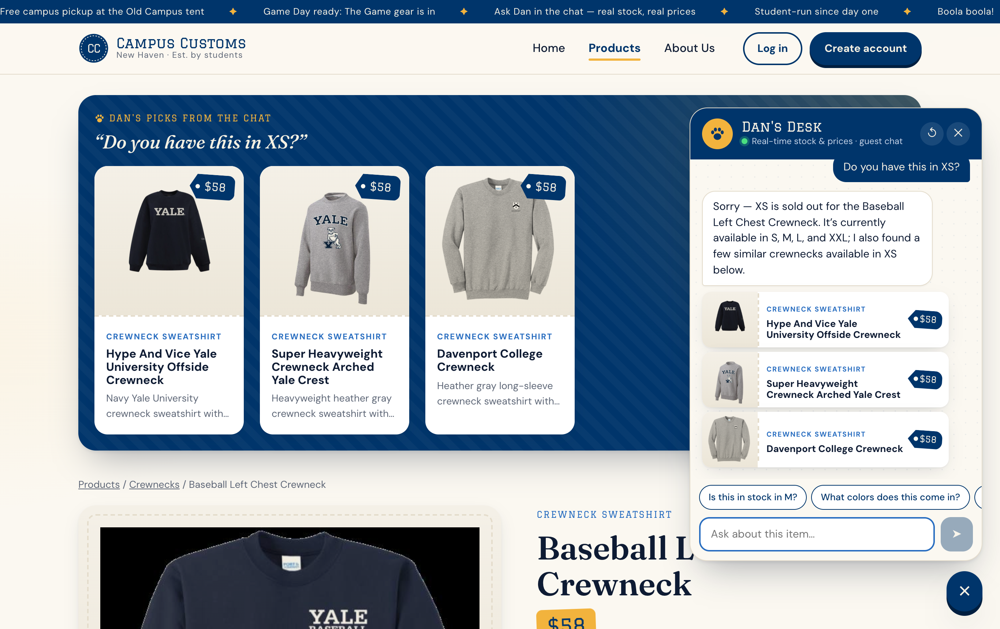

Chat checks stock and price for an item
On the Basic Hoodie Big Yale page the shopper asks “How much is this one, and how many are left in XL?”. Dan answers $68 and 2 left in XL (low stock), which matches the page’s own stock line (“Size XL: 2 in stock”). It understood “this one” from the page context and called the check_stock tool instead of guessing.
Database: catalogue.price = 68.0, inventory(basic-hoodie-big-yale, XL).quantity = 2. Audit trail shows the check_stock call and its result for this run.

Category question puts product cards on the page
On the Products page the shopper asks “What hoodies do you have?”. The agent calls search_products, reports the honest total (27 hoodies), and returns 8 product ids. The website renders them as product cards in the “Dan’s picks” shelf at the top of the page, with 3 mini cards in the chat. Clicking any of these cards opens the same detail page as the Products grid.
API contract: agent output show_product_ids → backend re-reads each id from SQLite → ChatResponse.products → React <ProductCard> linking to /products/{id}.

Sold-out size → in-stock alternatives (new agent tool)
On the Baseball Left Chest Crewneck page the shopper asks “Do you have this in XS?”. Dan says clearly that XS is sold out, lists the sizes that are in stock (S, M, L, XXL), and uses the new find_in_stock_alternatives tool to show three similar crewnecks that are in stock in XS, as cards on the page and in the chat. This is usability improvement #3 in usability.md.
Database: inventory(baseball-left-chest-crewneck, XS).quantity = 0; the alternatives (Hype And Vice Offside Crewneck, Super Heavyweight Arched Yale Crest, Davenport College Crewneck) all have XS stock > 0.
